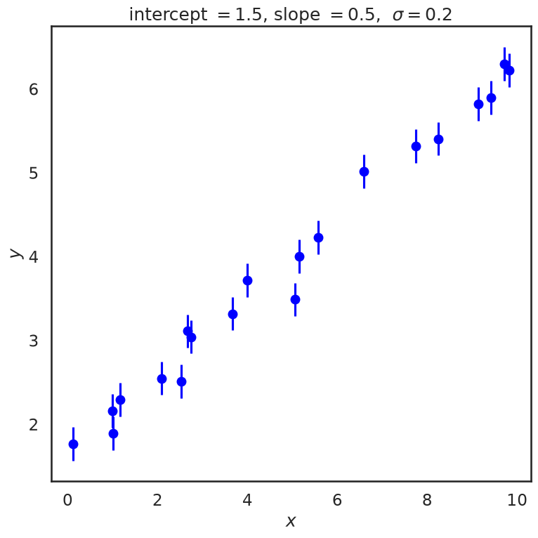
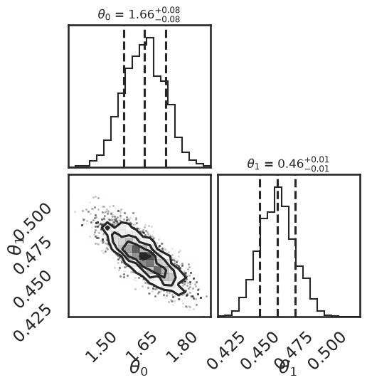
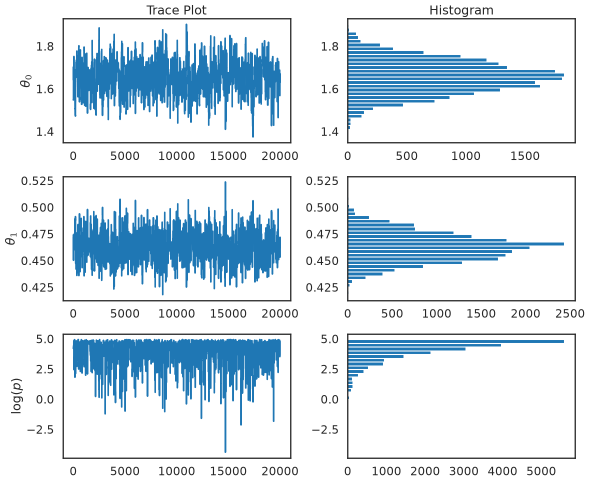
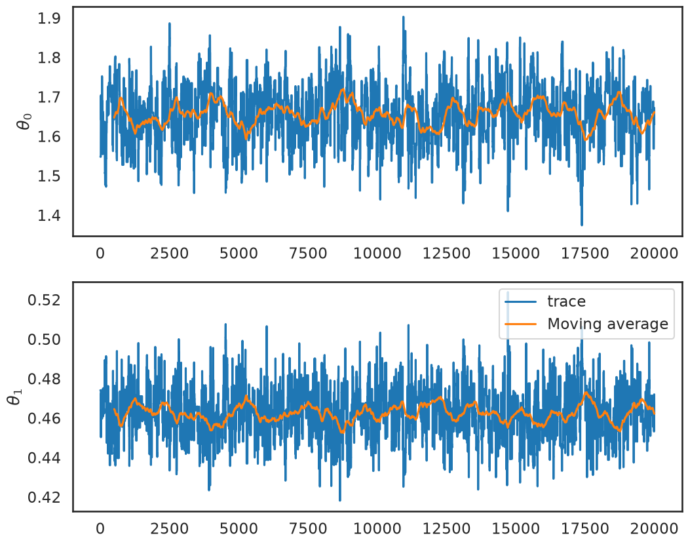
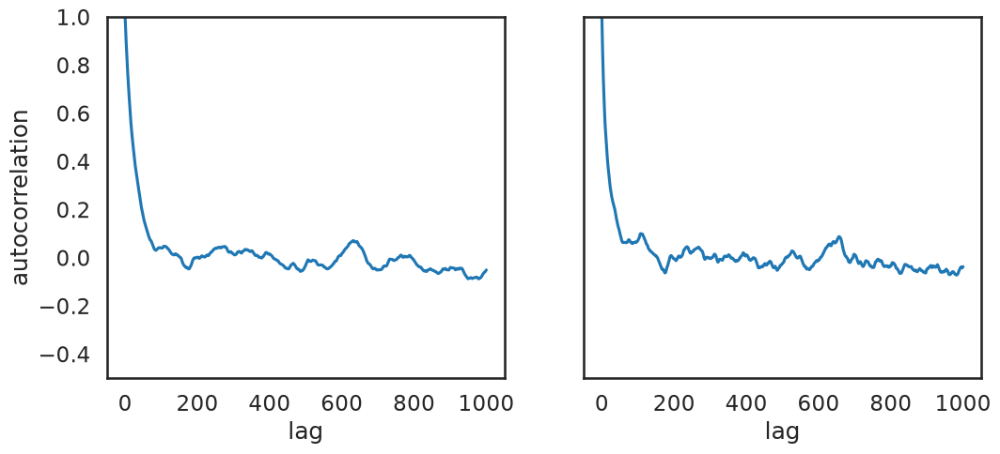
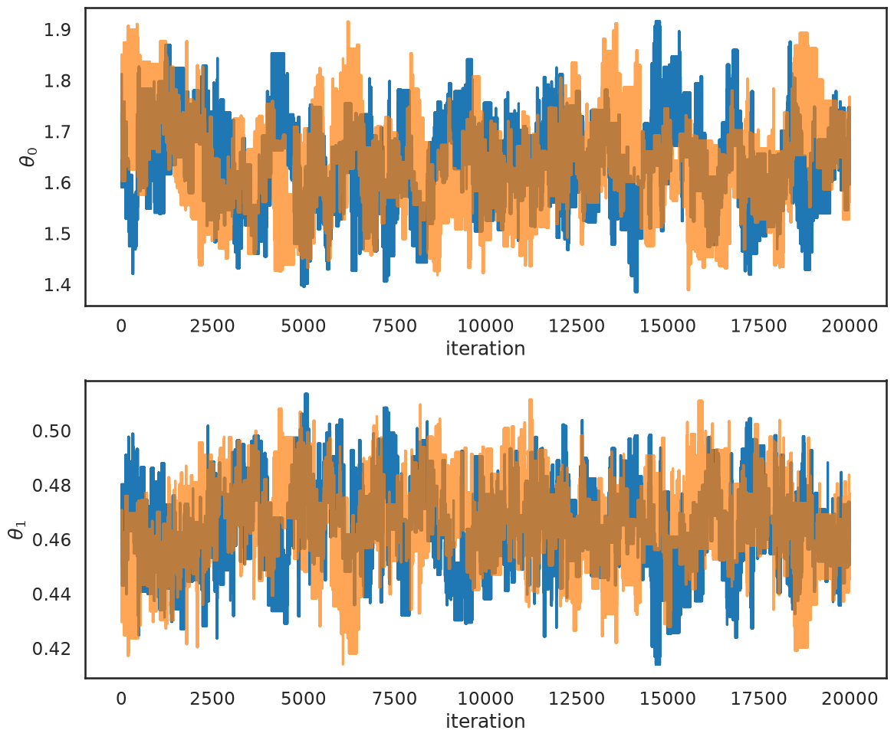

21.3. Demo: MCMC Diagnostics#
This notebook demonstrates some of the basic MCMC diagnostic tools. It was adapted from the TALENT course on Learning from Data: Bayesian Methods and Machine Learning (York, UK, June 10-28, 2019). The original notebook was by Christian Forssen. Revisions by Dick Furnstahl.
%matplotlib inline
import numpy as np
from scipy.stats import norm, uniform
import matplotlib.pyplot as plt
import seaborn as sbn
sbn.set_style('white')
sbn.set_context('talk')
import pandas as pd
import warnings
warnings.filterwarnings('ignore')
MCMC diagnostics: assessing convergence#
From previous notebooks, we know that using Metropolis-Hastings (MH) leads to a Markov Chain that we can use for inference. This is predicated on our chain converging to our stationary distribution (the posterior). Knowing when a chain has converged is a numerical issue and there are some diagnostic tools that we can use for assessing convergence.
BDA3: Gelman et al, Fig. 11.1#

Fitting a straight line - revisited#
Let us revisit the problem of inferring the parameters of a straight line. See also 📥 Problem: fitting a straight line and 📥 Problem: fitting a straight line II
The Data#
Let’s start by creating some data that we will fit with a straight line. We’ll start with a constant standard deviation of \(\sigma\) on the \(y\) values and no error on \(x\).
np.random.seed() # set up the random seed for later calls
def make_data(intercept, slope, N_pts=20, dy=.2, rseed=None):
"""Given a straight line defined by intercept and slope:
y = slope * x + intercept
generate N_pts points randomly spaced points from x=0 to x=x_max
with Gaussian (i.e., normal) error with mean zero and standard
deviation dy.
Unless rseed is specified as an integer, new random data will be
generated each time.
Return the x and y arrays and an array of standard deviations.
"""
rand = np.random.RandomState(rseed)
x_max = 10.
x = x_max * rand.rand(N_pts) # choose the x values randomly in [0,10]
y = intercept + slope * x # This is the y value without noise
y += dy * rand.randn(N_pts) # Add in Gaussian noise
return x, y, dy * np.ones_like(x) # return coordinates and error bars
# Specify the true parameters and make sample data
intercept = 1.5 # true intercept (called b elsewhere)
slope = 0.5 # true slope (called m elsewhere)
theta_true = [intercept, slope] # put parameters in a true theta vector
x, y, dy = make_data(*theta_true)
# Make a plot of the data
fig, ax = plt.subplots(figsize=(8,8))
ax.errorbar(x, y, dy, fmt='o', color='blue')
ax.set_xlabel(r'$x$')
ax.set_ylabel(r'$y$')
plot_title = rf'intercept $= {intercept:.1f}$, slope $= {slope:.1f}$, ' \
+ rf' $\sigma = {dy[0]:.1f}$'
ax.set_title(plot_title)
fig.tight_layout()

The Model#
Next we need to specify a theoretical model. We’re fitting a straight line to data, so we’ll need a slope and an intercept; i.e.
where our parameter vector will be
But this is only half the picture: what we mean by a “model” in a Bayesian sense is not only this expected value \(y_{\textrm{th}}(x;\theta)\), but a probability distribution for our data. That is, we need an expression to compute the likelihood \(p(D\mid\theta, I)\) for our data as a function of the parameters \(\theta\) (\(I\) stands for all other information). Here \(D\) is the set of all \((x,y)\) pairs that we know about (or measure).
[Note: At this stage we are (implicitly) assuming that our theoretical model is perfect. But it is not! We’ll come back eventually to talk about adding a theory error \(\delta y_{\textrm{th}}\).]
We are given data with simple error bars, which imply that the probability for any single data point (labeled by \(i\)) is a normal distribution with mean given by the true value. That is,
or, in other words,
where \(\varepsilon_i\) are the (known) measurement errors indicated by the error bars.
Assuming all the points are independent, we can find the full likelihood by multiplying the individual likelihoods together:
For convenience (and also for numerical accuracy) this is often expressed in terms of the log-likelihood:
# Log likelihood
def log_likelihood(theta, x, y, dy):
"""Return the log likelihood given the vector of parameters theta and
numpy arrays for x, y, and dy (which is the standard deviation).
"""
y_model = theta[0] + theta[1] * x
return -0.5 * np.sum(np.log(2 * np.pi * dy ** 2) +
(y - y_model) ** 2 / dy ** 2)
# Let's use the (log) symmetric prior, which is the scale-invariant one.
# Uniform prior for the offset
def log_prior(theta):
"""Prior p(m) proportional to (1 + m^2)^{-3/2}"""
if np.abs(theta[0]) < 1000:
return -1.5 * np.log(1 + theta[1]**2)
else:
return -np.inf # log(0)
def log_posterior(theta, x, y, dy):
"""Return the log posterior by evaluating the log prior and log
likelihood.
Probably should first check if the log prior is -np.inf before
evaluating the log likelihood
"""
return log_prior(theta) + log_likelihood(theta, x, y, dy)
We will use the emcee sampler, but in its Metropolis-Hastings mode. In particular, we invoke the sampler with moves.GaussianMove(cov), which implements a Metropolis step using a Gaussian proposal with mean zero and covariance cov. The covariance cov could be a scalar, as it is here, or a vector or a matrix. See the relevant emcee manual page for further details and more general moves. The stepsize parameter is at our disposal to explore the consequences on convergence of it being too large or too small.
Alternatively, you can use your own sampler here if you created one.
import emcee
import corner
print('emcee sampling (version: )', emcee.__version__)
ndim = 2 # number of parameters in the model
nwalkers = 10
nwarmup = 1000
nsteps = 2000
# MH-Sampler setup
stepsize = .005
cov = stepsize * np.eye(ndim)
p0 = np.random.rand(nwalkers,ndim)
# initialize the sampler
sampler = emcee.EnsembleSampler(nwalkers, ndim, log_posterior, args=[x, y, dy],
moves=emcee.moves.GaussianMove(cov))
emcee sampling (version: ) 3.1.6
To get the chains below we use sampler.chain, which will give a list with the shape (# walkers, # steps, # dimensions). So 10 walkers taking 2000 steps each for a two-dimensional posterior (that is, \(\boldsymbol{\theta}\) has two components) has the shape (10, 2000, 2). We can combine the results from all the walkers with sampler.chain.reshape((-1,ndim)), which flattens the first two axes of the list. (One reshape dimension can always be \(-1\), which infers the value from the length of the array. So here the reshaped array will have two axes with the second one having dimension ndim.)
# Sample the posterior distribution
# Warm-up
if nwarmup > 0:
print(f'Performing {nwarmup} warmup iterations.')
pos, prob, state = sampler.run_mcmc(p0, nwarmup)
sampler.reset()
else:
pos = p0
# Perform iterations, starting at the final position from the warmup.
print(f'MH sampler performing {nsteps} samples.')
%time sampler.run_mcmc(pos, nsteps)
print("done")
print(f"Mean acceptance fraction: {np.mean(sampler.acceptance_fraction):.3f}")
samples = sampler.chain.reshape((-1, ndim))
samples_unflattened = sampler.chain
lnposts = sampler.lnprobability.flatten()
# make a corner plot with the posterior distribution
fig = corner.corner(samples, quantiles=[0.16, 0.5, 0.84], labels=[r"$\theta_0$", r"$\theta_1$"],
show_titles=True, title_kwargs={"fontsize": 12})
Performing 1000 warmup iterations.
MH sampler performing 2000 samples.
CPU times: user 679 ms, sys: 476 μs, total: 680 ms
Wall time: 679 ms
done
Mean acceptance fraction: 0.109

print(samples.shape)
print(samples_unflattened.shape)
print(lnposts.shape)
(20000, 2)
(10, 2000, 2)
(20000,)
fix, ax = plt.subplots(3,2,figsize=(12,5*ndim))
for irow in range(ndim):
ax[irow,0].plot(np.arange(samples.shape[0]),samples[:,irow])
ax[irow,0].set_ylabel(r'$\theta_{0}$'.format(irow))
ax[irow,1].hist(samples[:,irow],orientation='horizontal',bins=30)
ax[2,0].plot(np.arange(samples.shape[0]),lnposts)
ax[2,1].hist(lnposts,orientation='horizontal',bins=30)
ax[2,0].set_ylabel(r'$\log(p)$')
ax[0,1].set_title('Histogram')
ax[0,0].set_title('Trace Plot')
plt.tight_layout()

How do we know this chain has converged to the posterior?#
Credit to BDA3 by Gelman et al. and lecture notes by Rob Hicks
Standard Error of the Mean#
This investigates the question how does the mean of \(\theta\) deviate in our chain, and is capturing the simulation error of the mean rather than underlying uncertainty of our parameter \(\theta\):
where \(N\) is the chain length (the number of iterations in your chain).
For our problem this is:
for irow in range(ndim):
print(f"Standard Error of the Mean for theta_{irow}: {samples[:,irow].std()/np.sqrt(samples.shape[0]):.1e}")
Standard Error of the Mean for theta_0: 5.4e-04
Standard Error of the Mean for theta_1: 9.2e-05
This is saying that very little of our posterior variation in \(\theta\) is due to sampling error (that is good). We can visualize this by examining the moving average of our chain as we move through the iterations:
fix, ax = plt.subplots(2,1,figsize=(12,10))
# pandas makes this easy:
df_chain = pd.DataFrame(samples,columns=['theta0','theta1'])
df_chain['ma_theta0'] = df_chain.theta0.rolling(window=500,center=False).mean()
df_chain['ma_theta1'] = df_chain.theta1.rolling(window=500,center=False).mean()
ax[0].plot(np.arange(samples.shape[0]),samples[:,0],label=r'$\theta_0$')
ax[0].plot(np.arange(samples.shape[0]),df_chain['ma_theta0'],label=r'Moving average')
ax[0].set_ylabel(r'$\theta_0$')
ax[1].plot(np.arange(samples.shape[0]),samples[:,1],label=r'trace')
ax[1].plot(np.arange(samples.shape[0]),df_chain['ma_theta1'],label=r'Moving average')
ax[1].set_ylabel(r'$\theta_1$')
plt.legend();

This is a good sign that our chain is stable, since both the individual samples of \(\theta\) in our chain and the mean of the samples dance around a stable value of \(\theta\). The calculation above makes this more concrete. There are time series versions of this calculation that accounts for the fact that the chain is not iid.
Autocorrelation Plots#
def autocorrelation(chain, max_lag=100):
dimension = len(chain)
acors = np.empty(max_lag+1)
if max_lag > len(chain)/5:
warnings.warn('max_lag is more than one fifth the chain length')
# Create a copy of the chain with average zero
chain1d = chain - np.average(chain)
for lag in range(max_lag+1):
unshifted = None
shifted = chain1d[lag:]
if 0 == lag:
unshifted = chain1d
else:
unshifted = chain1d[:-lag]
normalization = np.sqrt(np.dot(unshifted, unshifted))
normalization *= np.sqrt(np.dot(shifted, shifted))
acors[lag] = np.dot(unshifted, shifted) / normalization
return acors
fig, ax = plt.subplots(1,2,sharey=True,figsize=(12,5))
for icol in range(ndim):
acors = autocorrelation(samples[:,icol],max_lag=1000)
ax[icol].plot(acors)
ax[icol].set_xlabel('lag')
ax[0].set(ylabel='autocorrelation', ylim=(-.5, 1.));

Acceptance Rate for the MH Algorithm#
Recall that we want the acceptance rate to be in the range .2 to .4. For our problem this paper suggests an acceptance rate of .234 for random walk MH.
Since the number of new members in the chain represent the number of acceptances, count changes in chain values and divide by total chain length to calculate acceptance rate:
print(f"Acceptance Rate is: {np.mean(sampler.acceptance_fraction):.3f}")
Acceptance Rate is: 0.109
The acceptance rate is helpful in describing convergence because it indicates a good level of “mixing” over the parameter space. The acceptance rate can be tuned via the proposal width after which we re-run our MH MCMC sampler.
Note: modern software (like pymc and emcee) can auto-tune the proposal distribution to achieve a desired acceptance rate.
Gelman Rubin Diagnostic#
If our MH MCMC Chain reaches a stationary distribution, and we repeat the exercise multiple times, then we can examine if the posterior for each chain converges to the same place in the distribution of the parameter space.
Steps:
Run multiple chains starting at different points (multiple walkers). Discard the warm-up for each.
Split each chain in two, with \(N\) iterations in each half chain. Call \(M\) the total number of chains now (twice the original number).
Calculate the within and between chain variance. This tests both mixing (if well-mixed, the separate parts of different chains should mix) and stationarity (two halves of each chain should be sampling the same distribution).
Label the scalar parameter or expectation value being tested as \(\psi\) and label the simulated results as \(\psi_{ij}\), where \(i\) runs from 1 to \(N\) within each chain and \(j\) labels the chain from 1 to \(M\). Then we define:
where \(\overline\psi_{\cdot j}\) is the mean within chain \(j\) and \(\overline\psi_{\cdot \cdot}\) is the average (mean) of these means across the \(M\) chains.
Within chain variance:
with \(s_j^2\) is the variance of each chain. So \(W\) is the mean of the in-chain variances. It is expected that \(W\) will underestimate the variance of \(\psi\) (which we’ll denote \({\mbox{var}}(\psi)\) because an individual sequence (i.e., chain) with \(N < \infty\) will not have run forever, so it will not have ranged over the full target distribution, so it will have less variability.
Between chain variance:
There is an \(N\) in the numerator of \(B\) because it is from the variance of the within-sequence means \(\overline\psi_{\cdot j}\), each of which is an average of \(N\) values \(\psi_{ij}\).
Calculate the estimated variance of \(\psi\) as the weighted sum of within and between chain variance.
This quantity is expected to overestimate \({\mbox{var}}(\psi)\) but is unbiased under stationarity.
Calculate the potential scale reduction factor, \(\hat{R}\), which is the factor by which the scale that characterizes the distribution for \(\psi\) at the current stage might be reduced if we increased each chain size \(N\) toward infinity:
Based on our expectations, this should be greater than 1 because the numerator overestimates \({\mbox{var}}(\psi)\) and denominator underestimates it. But if it is close to 1, then it should mean that both chains are mixing around the stationary distribution.
Gelman and Rubin show that when \(\hat{R}\) is greater than 1.1 or 1.2, we need longer runs.
Let’s run 2 chains:
no_of_chains=2
chains=[]
for ichain in range(no_of_chains):
sampler.reset()
p0 = np.random.rand(nwalkers,ndim)
# Warm-up
if nwarmup > 0:
print(f'Chain {ichain} performing {nwarmup} warmup iterations.')
pos, prob, state = sampler.run_mcmc(p0, nwarmup)
sampler.reset()
else:
pos = p0
# Perform iterations, starting at the final position from the warmup.
print(f'MH sampler {ichain} performing {nsteps} samples.')
sampler.run_mcmc(pos, nsteps)
print("done")
print(f"Mean acceptance fraction: {np.mean(sampler.acceptance_fraction):.3f}")
chains.append(sampler.flatchain)
Chain 0 performing 1000 warmup iterations.
MH sampler 0 performing 2000 samples.
done
Mean acceptance fraction: 0.117
Chain 1 performing 1000 warmup iterations.
MH sampler 1 performing 2000 samples.
done
Mean acceptance fraction: 0.119
chain1 = chains[0]
chain2 = chains[1]
num_iter = chain1.shape[0]
fig, ax = plt.subplots(2, 1, figsize=(12,10))
for icol in range(ndim):
ax[icol].plot(np.arange(num_iter), chain1[:,icol])
ax[icol].plot(np.arange(num_iter), chain2[:,icol], alpha=.7)
ax[icol].set_ylabel(fr'$\theta_{icol}$')
ax[icol].set_xlabel('iteration')
fig.tight_layout()

# rewrite of Gelman-Rubin estimation
# we only want one of the variables
Nchain = int(nsteps / 2) # full chain
Nchain = 2500 # size of each chain to use here
Mchain = 4 # total number of chains
param = 0 # which parameter to use
def Gelman_Rubin_diagnostic_calc(chains, Nchain, Mchain=4, param=0):
psi_chains = np.zeros((Mchain, Nchain))
for icol in range(0, Mchain, 2):
i = int(icol/2)
psi_chains[icol,:] = np.array( chains[i] )[:Nchain, param]
psi_chains[icol+1,:] = np.array( chains[i] )[Nchain:2*Nchain, param]
psi_mean = np.array([chain.mean() for chain in psi_chains])
psi_mean_all = psi_mean.sum() / Mchain
var_chain = np.zeros(Mchain)
for i in range(Mchain):
var_chain[i] = 1./(Nchain - 1) * \
((psi_chains[i] - psi_mean[i])**2).sum()
W = var_chain.sum() / Mchain
B = Nchain / (Mchain - 1) * \
np.array([(mean - psi_mean_all)**2 for mean in psi_mean]).sum()
var_theta = (1. - 1./Nchain) * W + 1./Nchain * B
Rhat = np.sqrt(var_theta/W)
print(fr"Nchain = {Nchain:4d} Rhat = {Rhat:.3f}")
print(f"Gelman-Rubin Diagnostic for different chain lengths: ")
for Nchain in [50, 100, 200, 500, 1000, 2000]:
Gelman_Rubin_diagnostic_calc(chains, Nchain, param=0)
Gelman-Rubin Diagnostic for different chain lengths:
Nchain = 50 Rhat = 1.102
Nchain = 100 Rhat = 1.435
Nchain = 200 Rhat = 1.815
Nchain = 500 Rhat = 1.351
Nchain = 1000 Rhat = 1.155
Nchain = 2000 Rhat = 1.236
To repeat: Gelman and Rubin show that when \(\hat{R}\) is greater than 1.1 or 1.2, we need longer runs.
Univariate Approaches#
The diagnostics we have discussed are all univariate (they work perfectly when there is only one parameter to estimate).
So most people examine univariate diagnostics for each variable, examine autocorrelation plots, acceptance rates and try to argue chain convergence based on that.